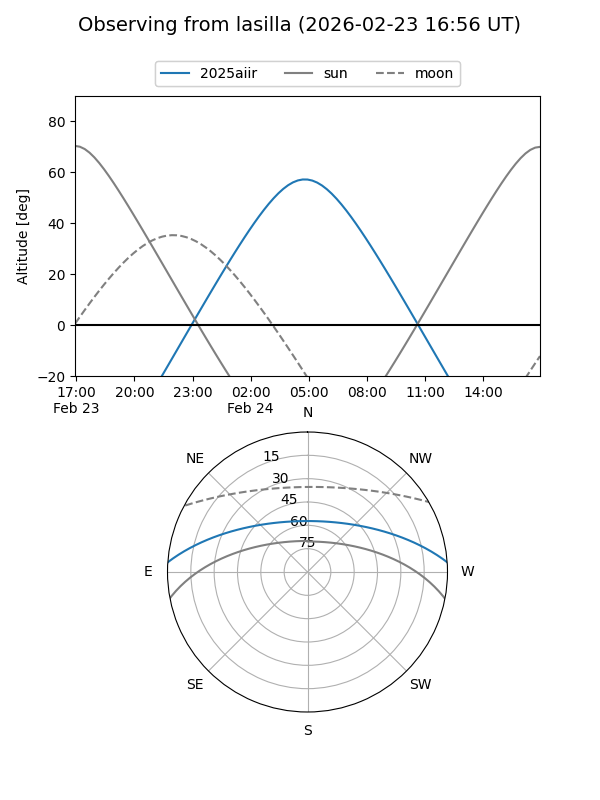
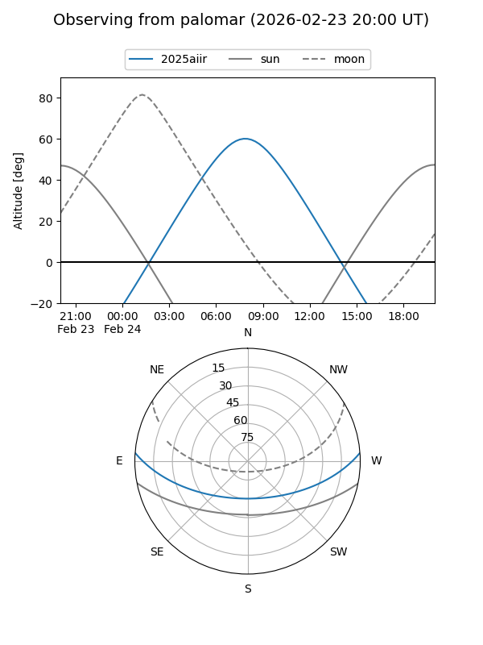
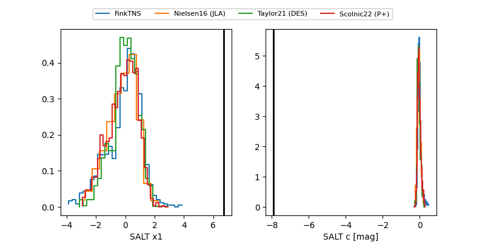

2025aiir
Target 2025aiir at 2026-01-19 03:55
Aliases and brokers:
FINK: link
Lasair: link
ALeRCE: link
TNS: link
YSE: link
alt names
ZTF26aaapglm (ztf,fink_ztf)
2025aiir (tns,yse)
PS25may (panstarrs)
ATLAS26acu (atlas)
Coordinates:
equatorial (ra, dec) = 154.9883,+3.63468
equatorial (HMS+DMS) = 10:19:57.18,+03:38:04.85
galactic (l, b) = (239.2329,+46.89006)
Flags:
Photometry:
last ztfg=19.07
1 ztfg detections
Lightcurve

Visibility


Additional plots
